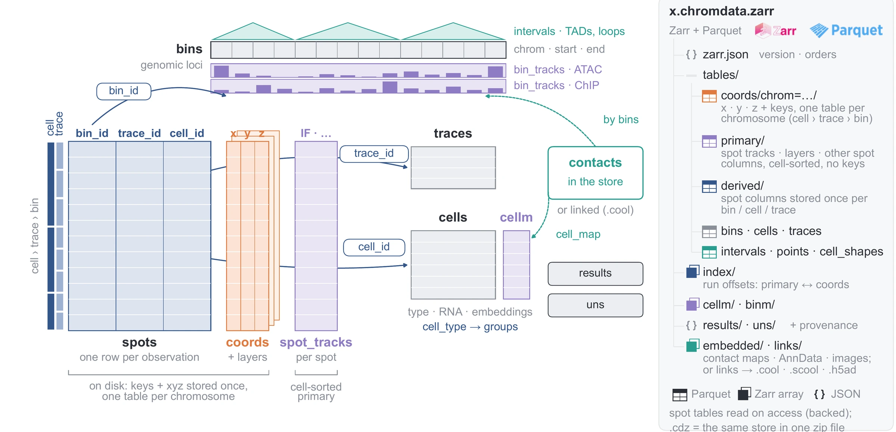
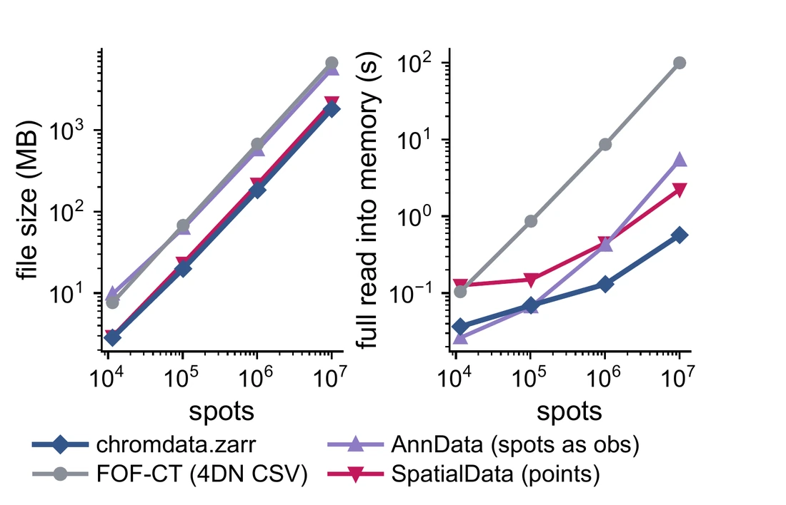
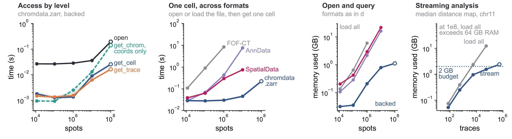

The software behind the atlas
One data structure for the 3-D genome
U-Chrom (Universal Chromatin) is a Python toolkit for chromatin 3-D structure data. Chromatin tracing, single-cell and spatial Hi-C and 3-D reconstructions all become one container, ChromData, which every analysis module and the browser share.
- Chromatin tracingDNA FISH, seqFISH+, 4DN FOF-CT tables
- Single-cell Hi-C.pairs, per-cell maps, with RNA of the same cells
- Spatial Hi-Cspots of a tissue section, images, RNA, ATAC
- 3-D structuresmodels from contacts: .3dg, PDB, U-Chrom's own
- ChromDataone table of loci, coordinates and cells
Data model
ChromData
Every row of a ChromData is a spot: one locus of one copy of a chromosome in one cell, with its x, y, z when it has them. Spots are stored flat and read by cell, trace or chromosome; the loci live once, on an axis that all cells share.
Locus axis one row per locus, shared by all cells
- bins
- chrom, start, end
- bin_tracks
- per-locus signals: bulk ATAC, ChIP, GC, compartment scores
- intervals
- typed TADs, loops, peaks, segments
Spot axis one row per locus of a chromosome copy
- spots
- bin_id, trace_id, cell_id
- coords
- x, y, z (n × 3); alternative models in layers
- spot_tracks
- per-spot signals: IF intensity, seqFISH z-scores
Cell axis one row per cell or spot of a tissue
- cells
- cell type, stage, QC, position in the tissue
- cellm
- embeddings: RNA / Hi-C / ATAC PCA and UMAP
- cell_shapes, points
- outlines, RNA spots and other 3-D points
Other modalities linked, or embedded in the store
- contact maps
- per cell (.scool) and bulk (.cool / .mcool)
- AnnData
- RNA, ATAC, A/B per cell or spot
- images
- tissue sections, in tissue coordinates
- Contacts stay contacts. Contact maps are kept as maps, linked or embedded, never forced into coordinates; distances are computed per trace on demand rather than stored as matrices.
- Results keep their provenance. Called TADs, loops and compartments carry the function, parameters, inputs and U-Chrom version that made them.
- FOF-CT in and out. The 4DN FISH Omics Format core table maps onto ChromData one to one, in both directions.

.chromdata.zarr layout: Zarr v3 with Parquet tables, coordinates one table per
chromosome; .cdz is the same store in one zip file. Fig. 2aOn disk and at scale
.chromdata.zarr
Open formats any language can read, laid out so that a reader fetches only what it needs, from a disk or over HTTP. Benchmarks on the Takei et al. 2025 cerebellum DNA seqFISH+ data (62 per-spot tracks), up to 107 real spots and 108 replicated ones.



- Read on demand. Opening an atlas dataset over HTTP takes about seventeen small requests; a cell, a chromosome or one region of a contact map is a range read.
- Self-contained. Contact maps, RNA and images can be embedded, so one store holds the whole dataset.
- One file when you want it.
.cdzis the same tree in one uncompressed zip: the atlas' download format, opened like the directory. - Versioned. Format 2.3; newer readers read older stores, and older formats convert in one command.
The package
An open ecosystem
Community formats are read, or linked without copying; five analysis modules share one API, reached from Python, the command line, the web browser this atlas runs on, and an MCP server for agents.

uchrom.recon), imaging-side
processing (uchrom.im), structure calling (uchrom.strc), geometric features
(uchrom.fea) and cell embeddings (uchrom.emb) on one ChromData; FOF-CT, .pairs,
.cool / .mcool / .scool, .hic, .3dg and tracing tools read, AnnData / MuData and coolers linked, structures
exported as PDB. Logos are marks of their owners, used for identification only.
Fig. 1cA first look
An atlas dataset in Python
The same stores the atlas shows, opened from Python: nothing is downloaded until it is used.
from uchrom import ChromData
cd = ChromData.read(
"https://uchrom-atlas-r2.u-science.org/stevens2017_mesc.chromdata.zarr",
backed=True, # read on demand, over HTTP
)
cd.cells # one row per cell
cell = cd.get_cell("Cell_1") # its 3-D genome structure
dist = cell.compute_distances(trace_id="Cell_1_chr1") # chr1 distance matrix
clr = cd.load_linked_scool(key="per_cell", cell="Cell_1") # its contact map (cooler)